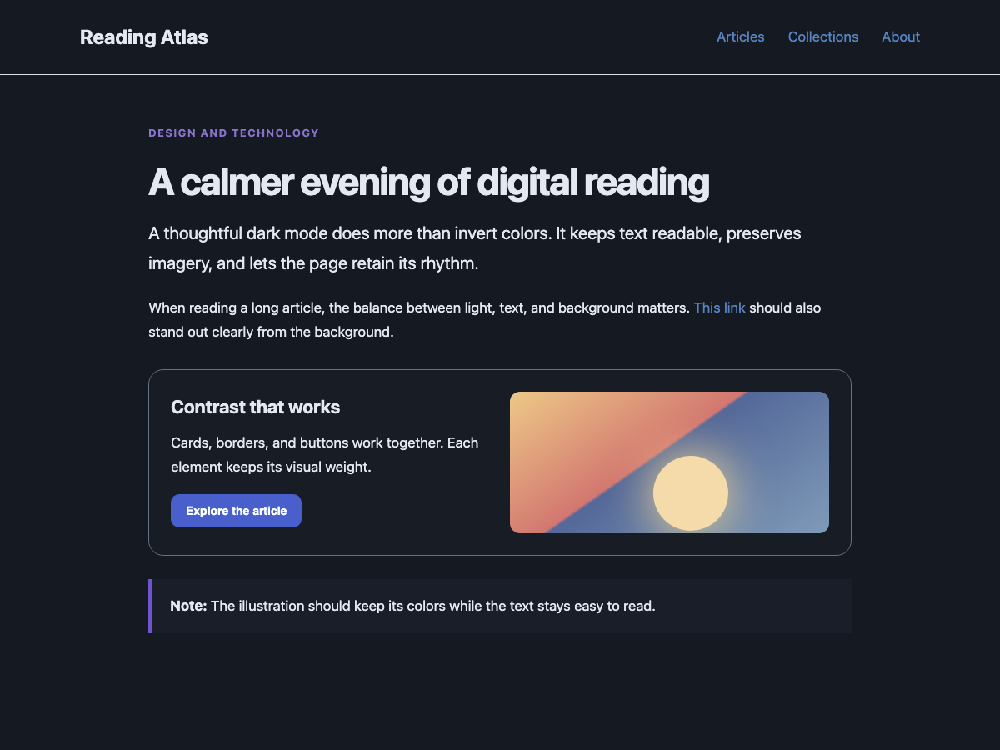

Clear contrast
Text, links, search hints, and single-color icons stay legible against dark surfaces.
LumaShade turns bright websites into comfortable dark pages while keeping text readable and photos true to color.

Dark mode should keep a page useful. LumaShade adjusts surfaces and text together, then leaves visual content alone.
Text, links, search hints, and single-color icons stay legible against dark surfaces.
Photos, videos, and multicolor artwork keep their intended colors.
Turn it on or off globally or for one website. Pages with an existing dark theme are left alone.
LumaShade is currently distributed as an open-source Xcode project for macOS.
Download the repository and open LumaShade.xcodeproj in Xcode.
Select your Apple development team for both targets, choose My Mac, and run the app.
Open Safari Settings → Extensions, enable LumaShade, and allow website access. Refresh open tabs.